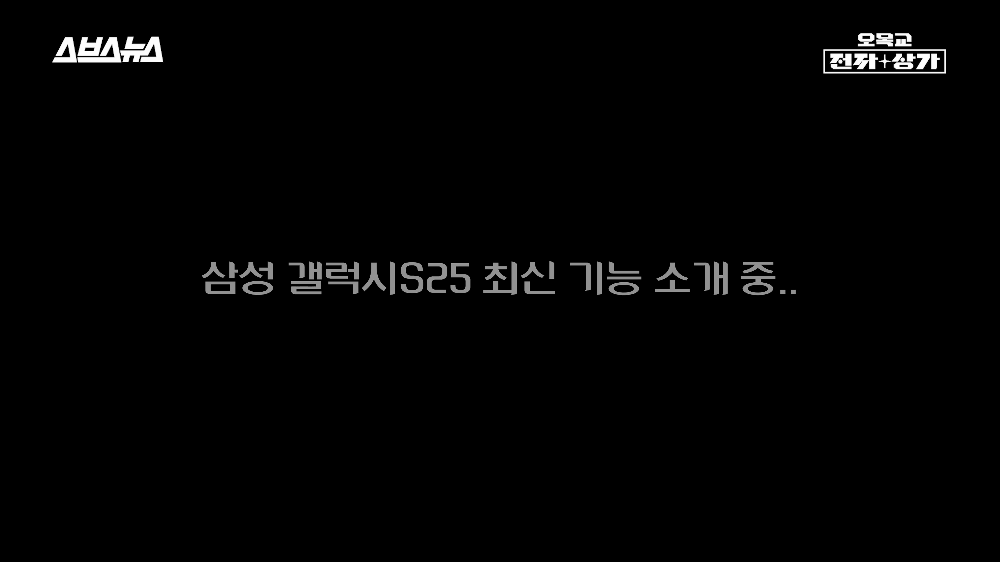
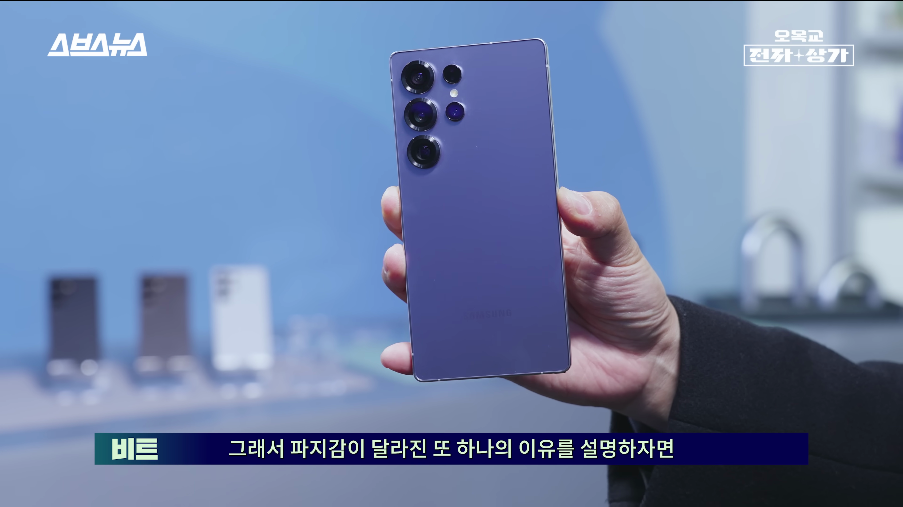
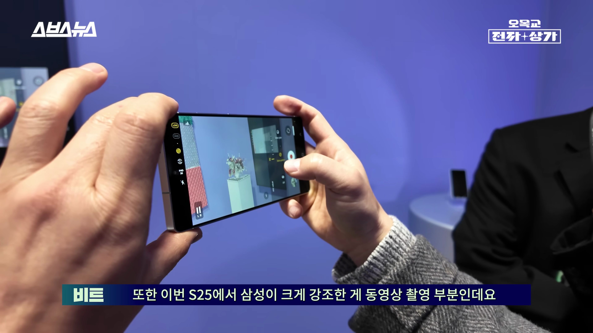
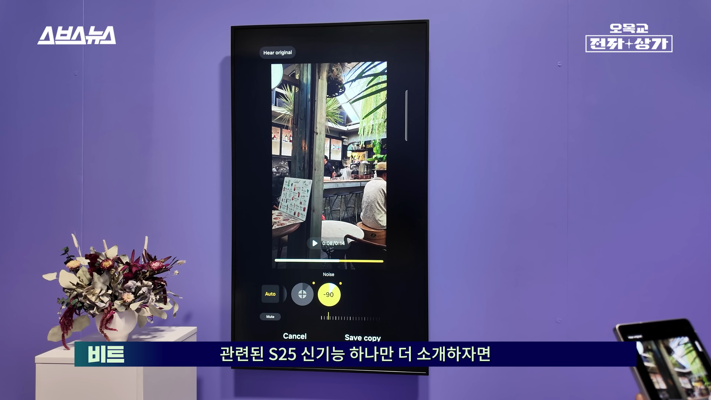
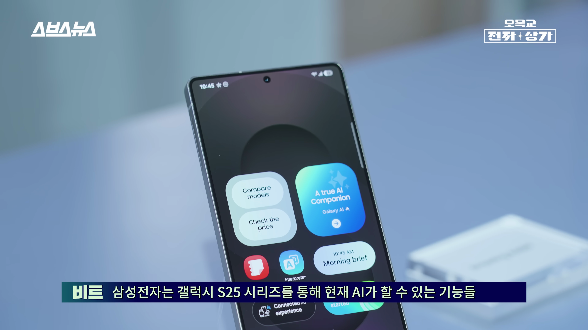

이번 포스트에서는 삼성 갤럭시 S25의 최신 변화와 기능들에 대해 깊이 분석해보겠습니다. 특히 디자인, 카메라 성능, AI 기능 등에서의 혁신을 중심으로 이야기를 나눠볼 예정입니다. 
갤럭시 S25 캘린더 기능
- 경기를 찾고 캘린더에 추가 기능 제공
- 각 경기 한 시간 전에 알림 설정 가능
사용자는 갤럭시 S25를 통해 경기를 찾고 쉽게 캘린더에 추가할 수 있으며, 각각의 경기 한 시간 전에 알림을 받을 수 있습니다.

첫 공개 행사와 제품 소개
- 삼성 갤럭시 S25 시리즈 공개
- 모든 모델이 크기와 색상별로 전시됨
비트는 삼성 갤럭시 S25 시리즈의 첫 공개 행사에 참석하여, S25, S25 플러스, 울트라 모델의 다양한 색상과 크기를 직접 소개하였습니다.
디자인의 변화
- 둥글둥글한 모서리 디자인 적용
- 손으로 잡았을 때 편안함 증가
- 이전 모델들과의 비교에서 변화 확인 가능
갤럭시 S25는 둥글둥글한 모서리 디자인을 채택하여 손으로 잡았을 때의 편안함을 가져왔으며, 이전 모델 대비 외형적 변화를 분명히 느낄 수 있습니다.

무게와 사이즈 변화
- 무게 14g 감소
- 가로는 줄고 세로가 늘어난 변화
갤럭시 S25는 이전 모델보다 무게가 14g 줄어들어 가벼운 느낌을 제공하며, 가로 사이즈는 줄어든 반면 세로는 늘어났습니다.
카메라 성능 향상
- 2억 화소 메인 카메라 탑재
- 야간 촬영 기능 강화
갤럭시 S25의 카메라는 2억 화소의 광각 카메라가 새롭게 탑재되어, 야간 촬영 및 다양한 촬영 조건에서 향상된 화질을 제공합니다.

동영상 촬영의 혁신
- 10비트 HD 영상 촬영 지원
- 로گ 촬영 기능으로 편집 자유도 향상
갤럭시 S25는 10비트 HD 영상 촬영과 로г 촬영 기능을 지원하여 kreative한 동영상 편집이 가능해졌습니다.

AI 기능의 혁신
- 다양한 앱과 연동되는 AI 에이전트 기능
- 검색과 메시지 송신 자동화
AI 에이전트는 여러 앱과의 데이터 연동을 통해 사용자가 명령만 하면 복잡한 작업을 자동으로 수행합니다.

가격 경쟁력
- 갤럭시 S25의 가격은 전작과 동일함
- 256GB, 512GB, 1TB 모델의 가격 유지
갤럭시 S25 시리즈는 256GB, 512GB, 1TB 모델의 가격이 전작과 동일하여 우수한 가격 경쟁력을 자랑합니다.
Tags: #갤럭시 S25 #디자인 변화 #AI 기능 #카메라 성능 #동영상 촬영 #가격 #삼성 스마트폰